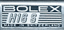
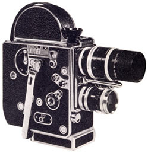
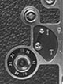
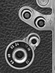

H-16 S
16mm Camera
1964
- OVERALL DIMENSIONS: 8 1/2" x 6" x 3"
- WEIGHT: Approximately 6 lbs
- OUTER CASE: Highly polished duraluminium body, covered in genuine Morocco leather. Metal parts are chrome-plated.
- FILM CAPACITY: 100ft (30m) and 50ft (15m) daylight loading spools of 16mm film.
- THREADING: Automatic threading and loop forming. The end of the film is simply placed in a channel leading to the feed sprocket. The release is pressed and the film is then automatically threaded throughout the entire mechanism.
- MOTOR: Constant speed, spring motor mechanism; governor controlled. Large winding handle folds downward and attaches to camera when not in use. Spring cannot be over-wound. 8:1 external drive shaft permits the attachment of an electric motor. Later models include a 1:1 drive shaft.
- TURRET: Rotating turret with folding lever; Accommodates three interchangeable C mount lenses; Built-in turret lock.
- VIEWFINDER: A cupped eyepiece or eye-level focuser allows for critical focusing through a groundglass screen. Parallax correcting 'PC-12' preview finder gives an exact viewing field for lenses of four focal lengths: 16mm, 25mm, 50mm and 75mm.
- FILTER SLOT: Built-in slot holds a gelatin filter behind the taking lens and in front of the shutter.
- VARIABLE SPEED: 12, 16, 18, 24, 32, 48 and 64 frames per second
- RELEASE BUTTON: provides for the making of continuous exposures by a finger-tip release on the front of the camera. A side release allows for locked, hands-free running or single frame exposures.
- SHUTTER: 144 degree aperture shutter
- FOOTAGE COUNTER: adds and subtracts accurately in forward or reverse motion and automatically returns to zero when film is reloaded into the camera.
- AUDIBLE FOOTAGE INDICATOR: A distinct click announces the passing of each 10 inches of film through the gate. This mechanism may be disengaged, if desired, by simply moving a lever.
- FRAME COUNTER: Twin dial counts frames individually and in total; Adds frames in forward motion and subtracts when film is wound backwards. Dial may be reset manually at any time.
- SINGLE FRAME: Time lapse and animation is possible by using the side release button or an accessory cable release and adapter; I-T lever allows for timed or instantaneous single exposures.
- MANUAL REWIND: Clutch disengages spring motor and permits forward movement and backwind without running down the spring; allows for dissolves and superimposition.
- TRIPOD SOCKET: Early round base model features a 3/8" thread. Later flat base model contained three tripod sockets: Two 3/8" thread and one 1/4" thread; the front of the flat base is removeable for easy mounting of the Bolex Matte Box.
Notes and Comments

The Bolex H-16 S camera was a non-reflex, turret style camera that incorporated all changes made to the model H since the introduction of the H-16 T. However, unlike the H16 T, the S series included a built in filter slot similar to the H16 Supreme. A new logo plate appeared on the body with the words "H16 S". Other improvements introduced with this camera included a turret clamp for heavy zoom lenses and an additional speed marking of 48 frames per second.
They were manufactured for a short time with the "round" bottom base until the flat base was added to all model H cameras. This allowed the camera to stand on a flat surface without the need for an accessory attachment. Other improvements included a series of four threaded sockets that permitted the attachment of an external motor drive.

Because a trailing number "3" was used to identify other H model camera bodies with the newly introduced flat base (e.g. the H8 REX-3, H16 M-3, etc,) this camera was also sold under the name "H-16 S-3" when it gained a flat base.
In 1965, the body of the H model camera was redesigned to include a 1:1 drive shaft. To make room for this shaft, the "I-T" time lever was replaced with a small knob that was located next to the speed dial. When the "S" gained the 1:1 drive shaft, it was marketed as the H-16 S-4 in the United States. Other countries seem to have dropped the suffix number and referred to the camera simply as an "H16S".



The easiest method of identifying the camera is by looking at the logo plate, which reads "H16 S". The original has a round base, while the 1964 version has a flat base. Both of these versions have an "I-T" time lever; the final version, the H16 S-4, has an I-T knob rather than a lever control. All H-16 S cameras were non-reflex.
Bolex cameras in the H16 non-reflex series:
H-16, H-16 Leader, H-16 Standard, H-16 Deluxe, H-16 Supreme, H-16 T and H-16 S. (See also: the Bolex H-16 M series.)
Serial Numbers and Dates of Manufacture
The serial number on this model is inscribed on the flat base of the camera body (and next to the threaded tripod mount on round base models.)
| # | Year | ||
|---|---|---|---|
| 200000 | — | 208000 | 1963 |
| 208000 | — | 214000 | 1964 |
| 214000 | — | 224000 | 1965 |
| 224000 | — | 232000 | 1966 |
| 232000 | — | 238600 | 1967 |
| 238600 | — | 242110 | 1968 |
| 242111 | — | 250185 | 1969 |